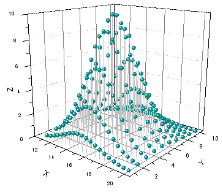
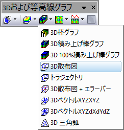

3D散布図
Mat-3DScatter
- 
要求されるデータ
- 少なくとも1つのZ列（あるいは、その部分領域）を選択します。Z列に結びついたXY列がある場合、そのXY列が使われます。そうでない場合、ワークシートのデフォルトのXY値が使われます。
- または、
- ワークシートセルのブロック（仮想行列）を選択します。
または、
グラフ作成
行列シートをアクティブにするか必要なデータをワークシート上で選択します。
ワークシーデータの場合、メニューからを選択します。行列データの場合も、を選択します。
または、
「3Dおよび等高線グラフ」ツールバーの「3D散布図」ボタン をクリックします。
- 
テンプレート
ワークシート
行列
- gl3DSCATTERMAT.OTP (OpenGL)
- 3DSCATTERMAT.OTP
(Originのプログラムフォルダにインストールされています。)